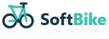
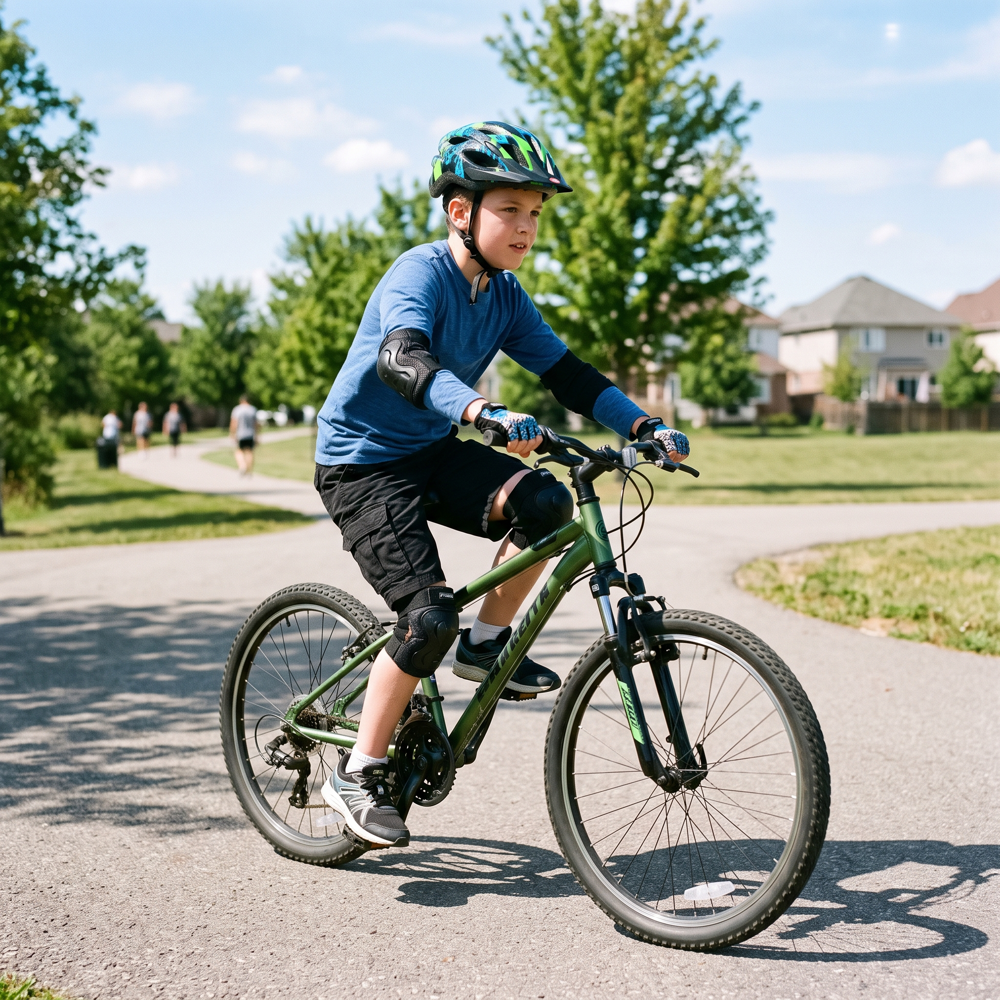

Aro 12
Aro 12 — Primeiros pedais
Ideal para os primeiros pedais, de 2 a 4 anos.

Fale ConoscoTecnologia + segurança para o pedal dos pequenos
Bicicletas infantis e juvenis com frenagem inteligente, localização em tempo real e detecção de quedas. Você acompanha tudo pelo celular, mesmo estando em casa.

Ideal para os primeiros pedais, de 2 a 4 anos.
Equilíbrio e diversão para crianças de 5 a 7 anos.
Mais autonomia para os pedais de 8 a 11 anos.
Frenagem automática, tranca elétrica e alertas de queda em tempo real, direto no seu celular.
Agende uma revisão e o técnico SoftBike vai até você. Simples, rápido e sem burocracia.
Aros e equipamentos de proteção pensados para cada idade, dos 2 aos 15 anos.
Tire dúvidas sobre tamanhos, segurança ou manutenção com nosso time humano.
Chamar no Whatsapp